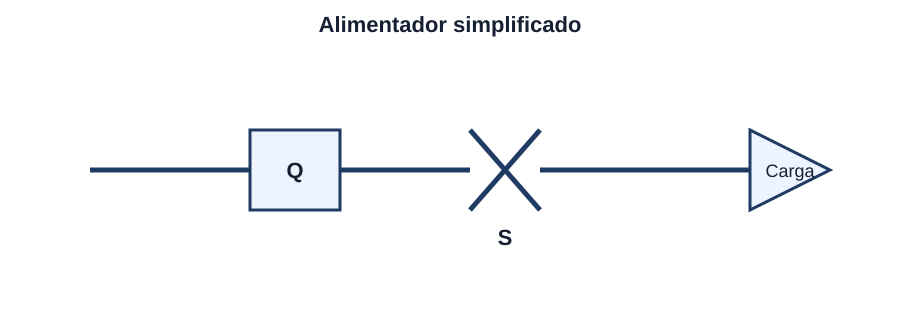
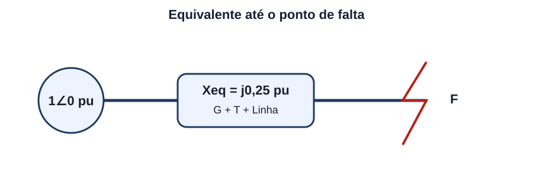
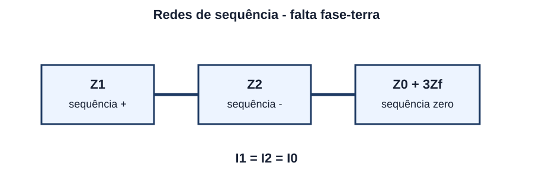
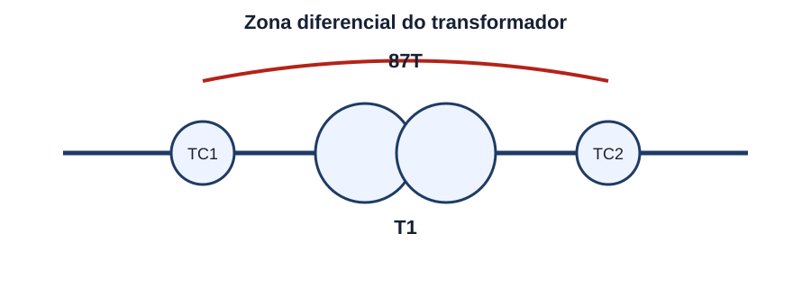
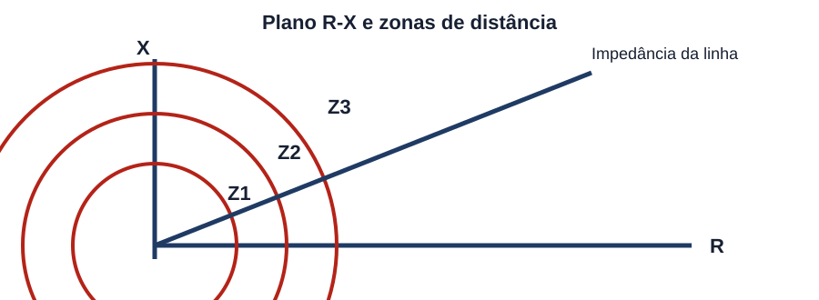
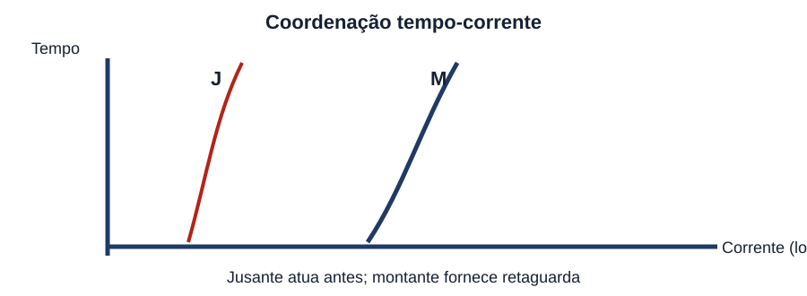
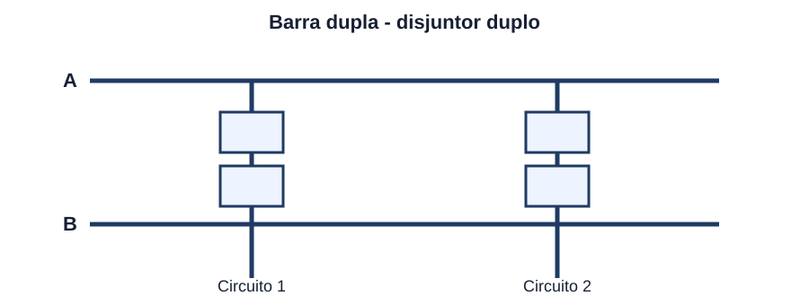
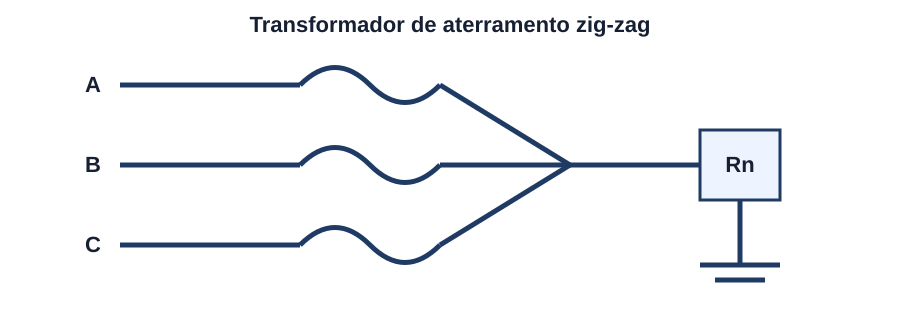
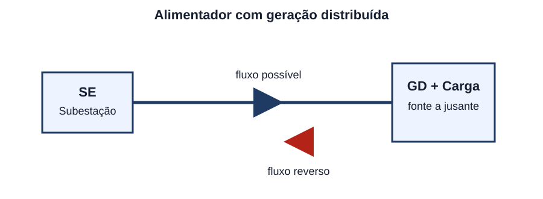
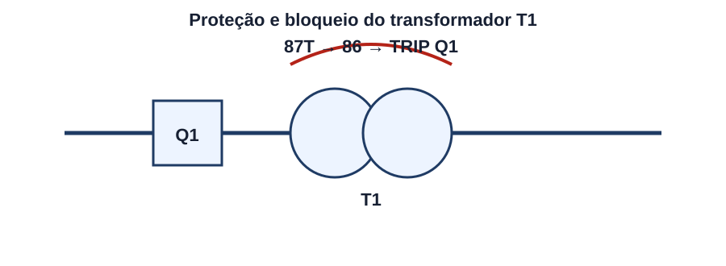

Sistemas de Potência e Proteção
45 questões autorais no padrão IDECAN • Engenharia Elétrica
| Questão 01 | SEP • Funções dos Equipamentos de Manobra |
Considere o diagrama unifilar simplificado de um alimentador de subestação. Para isolar o trecho em manutenção, a sequência operacional segura exige distinguir a capacidade de interrupção dos equipamentos representados.

A) A chave seccionadora S deve interromper a corrente de curto-circuito, enquanto o disjuntor Q apenas estabelece isolamento visível.
B) O disjuntor Q e a chave S podem interromper correntes de falta com a mesma capacidade, desde que sejam comandados simultaneamente.
C) O disjuntor Q interrompe a corrente de carga ou de falta; depois de aberto, a seccionadora S estabelece o isolamento do trecho sem corrente.
D) A seccionadora S deve ser aberta antes do disjuntor Q para impedir que o arco elétrico se forme nos contatos do disjuntor.
Gabarito Comentado: Alternativa C
O disjuntor é dimensionado para estabelecer e interromper correntes normais e de curto-circuito. A seccionadora, em regra, não possui capacidade para interromper corrente de falta e é empregada para produzir isolamento após a abertura do disjuntor. Assim, abre-se Q, confirma-se a ausência de corrente e, então, abre-se S. Na recomposição, a ordem é inversa.
Dica de Concurso • Como Pensar:Primeiro identifique qual equipamento extingue arco de potência. Em unifilares, o disjuntor elimina a corrente; a seccionadora cria a condição visível de isolamento.
| Questão 02 | Estrutura do SEP • Transformação de Tensão |
Uma usina entrega potência a um centro consumidor distante. Desconsiderando limites específicos de cada concessionária, qual justificativa técnica explica a elevação da tensão antes da transmissão e sua posterior redução próxima às cargas?
A) Para uma mesma potência, elevar a tensão reduz a corrente e as perdas $I^2R$; próximo às cargas, a tensão é reduzida para níveis compatíveis com distribuição e utilização.
B) Elevar a tensão aumenta a corrente e reduz a reatância das linhas, enquanto a redução posterior recupera o fator de potência original.
C) A transformação é necessária para manter constante a frequência, que seria proporcional à tensão durante o transporte de energia.
D) A transmissão em tensão elevada elimina a potência reativa da linha, tornando desnecessária qualquer compensação no sistema.
Gabarito Comentado: Alternativa A
Em sistema trifásico, $P=\sqrt{3}VI\cos\varphi$. Mantidos potência e fator de potência, o aumento de $V$ reduz $I$. Como as perdas nos condutores são proporcionais a $3I^2R$, a transmissão em tensão elevada reduz perdas e queda de tensão. A redução posterior atende requisitos de isolamento, segurança e utilização das cargas.
Dica de Concurso • Como Pensar:Quando a pergunta tratar da cadeia geração-transmissão-distribuição, relacione tensão elevada com corrente menor para a mesma potência; não associe a transformação à mudança de frequência.
| Questão 03 | Sistema por Unidade • Impedância de Base |
Em uma barra trifásica adotam-se $S_b=100\,\text{MVA}$ e $V_b=13{,}8\,\text{kV}$, sendo $V_b$ a tensão de linha. A impedância de base nessa barra é aproximadamente:
A) $0{,}526\,\Omega$.
B) $1{,}38\,\Omega$.
C) $13{,}8\,\Omega$.
D) $1{,}90\,\Omega$.
Gabarito Comentado: Alternativa D
Para bases trifásicas, usa-se diretamente $Z_b=V_b^2/S_b$, com tensão de linha em kV e potência trifásica em MVA. Portanto, $Z_b=13{,}8^2/100=1{,}9044\,\Omega$. Não se introduz o fator 3 nessa expressão, pois ele já está incorporado na definição das bases trifásicas.
Dica de Concurso • Como Pensar:Memorize o par: $Z_b=V_b^2/S_b$ e $I_b=S_b/(\sqrt{3}V_b)$. Antes de calcular, confira se as bases são trifásicas e se a tensão é de linha.
| Questão 04 | Sistema por Unidade • Mudança de Base |
Um transformador possui reatância $x=0{,}10\,pu$ em sua própria base de $50\,MVA$ e $13{,}8\,kV$. Mantida a mesma tensão-base, o valor da reatância na base de $100\,MVA$ é:
A) $0{,}05\,pu$.
B) $0{,}20\,pu$.
C) $0{,}40\,pu$.
D) $1{,}00\,pu$.
Gabarito Comentado: Alternativa B
A mudança de base é $x_{novo}=x_{antigo}(S_{novo}/S_{antigo})(V_{antigo}/V_{novo})^2$. Como as tensões-base são iguais, o último fator vale 1. Logo, $x_{novo}=0{,}10(100/50)=0{,}20\,pu$.
Dica de Concurso • Como Pensar:Não faça regra de três inversa automaticamente. Em pu, para tensão-base constante, a impedância em pu cresce na mesma proporção da potência-base.
| Questão 05 | Curto-Circuito Trifásico • Cálculo em pu |
No sistema da figura, as reatâncias equivalentes entre a fonte e o ponto F somam $j0{,}25\,pu$. Admitindo tensão pré-falta $1\angle0^\circ\,pu$ e desprezando a resistência, a corrente de falta trifásica e seu valor para $S_b=100\,MVA$ e $V_b=13{,}8\,kV$ são, aproximadamente:

A) $-j4{,}0\,pu$ e $16{,}7\,kA$.
B) $-j0{,}25\,pu$ e $1{,}05\,kA$.
C) $j4{,}0\,pu$ e $4{,}18\,kA$.
D) $-j2{,}0\,pu$ e $8{,}37\,kA$.
Gabarito Comentado: Alternativa A
A corrente simétrica é $I_f=V_{pré}/Z_{th}=1/(j0{,}25)=-j4\,pu$. A corrente-base vale $I_b=S_b/(\sqrt{3}V_b)=100/(\sqrt{3}\cdot13{,}8)=4{,}184\,kA$. Assim, $|I_f|=4\cdot4{,}184\approx16{,}7\,kA$.
Dica de Concurso • Como Pensar:Separe o problema em duas etapas: resolva a rede em pu e, somente no final, multiplique pela corrente-base da barra onde ocorre a falta.
| Questão 06 | Componentes Simétricas • Sequência Positiva |
Em relação às componentes simétricas de um conjunto trifásico desequilibrado, a componente de sequência positiva é formada por três fasores:
A) de mesmo módulo, em fase, cuja soma é diferente de zero no condutor neutro.
B) de módulos distintos e defasagens determinadas pelas impedâncias de cada fase.
C) de mesmo módulo, defasados de $120^\circ$, mantendo a ordem de fases do sistema original.
D) de mesmo módulo, defasados de $120^\circ$, com ordem de fases oposta à sequência de referência.
Gabarito Comentado: Alternativa C
A sequência positiva constitui um sistema equilibrado com a mesma ordem de fases da referência, por exemplo a-b-c. A sequência negativa também é equilibrada, mas apresenta ordem inversa, a-c-b. A sequência zero possui três fasores em fase.
Dica de Concurso • Como Pensar:Para não confundir positiva e negativa, observe a ordem de rotação dos fasores; o módulo e a defasagem de $120^\circ$ aparecem nas duas.
| Questão 07 | Componentes Simétricas • Sequência Negativa |
Em uma máquina de indução, correntes de sequência negativa são particularmente indesejáveis porque produzem um campo girante que:
A) gira no mesmo sentido e na mesma velocidade do campo positivo, elevando apenas o fator de potência.
B) gira em sentido oposto ao campo positivo, podendo provocar aquecimento adicional no rotor.
C) permanece estacionário no entreferro e atua somente sobre o circuito de excitação.
D) existe apenas quando o neutro é solidamente aterrado e desaparece em ligação triângulo.
Gabarito Comentado: Alternativa B
A sequência negativa cria campo girante em sentido contrário ao da sequência positiva. Visto do rotor, a frequência relativa associada pode ser elevada, induzindo correntes adicionais e aquecimento. Por isso, relés de desequilíbrio ou de sequência negativa são relevantes na proteção de máquinas.
Dica de Concurso • Como Pensar:Associe sequência negativa a desequilíbrio e aquecimento de máquinas. Não a confunda com sequência zero, cuja circulação depende do caminho de retorno.
| Questão 08 | Componentes Simétricas • Sequência Zero |
Para que uma corrente de sequência zero circule em um sistema trifásico, é necessário existir:
A) somente uma fonte de sequência positiva com tensão nominal superior à da carga.
B) uma ligação em triângulo em todos os lados dos transformadores, sem qualquer aterramento.
C) uma diferença entre as reatâncias de sequência positiva e negativa da linha.
D) um caminho de retorno compatível, normalmente pelo neutro aterrado, terra ou enrolamento em triângulo fechado.
Gabarito Comentado: Alternativa D
As três correntes de sequência zero estão em fase e sua soma é $3I_0$. Portanto, precisam de caminho de retorno. Um neutro aterrado permite esse retorno; um triângulo pode oferecer caminho interno para circulação, ainda que bloqueie a transferência da sequência zero para o outro lado da linha.
Dica de Concurso • Como Pensar:Em sequência zero, a pergunta-chave é: por onde a soma das três correntes retorna? Se não houver caminho, $I_0$ não circula naquele trecho.
| Questão 09 | Falta Monofásica à Terra • Redes de Sequência |
A figura apresenta três possibilidades de conexão das redes de sequência no ponto de uma falta monofásica à terra, com impedância de falta $Z_f$. Qual relação caracteriza corretamente esse defeito?

A) As redes positiva e negativa ficam em paralelo, enquanto a rede zero permanece aberta.
B) Somente a rede positiva participa, pois as correntes das fases sãs são nulas.
C) As redes positiva, negativa e zero são ligadas em série, incluindo-se $3Z_f$ no circuito equivalente.
D) As três redes são ligadas em paralelo e submetidas à mesma corrente de sequência positiva.
Gabarito Comentado: Alternativa C
Na falta fase-terra, $I_1=I_2=I_0$ no circuito de componentes simétricas. Essa igualdade conduz à ligação em série das três redes. Como a corrente de fase faltosa é $I_a=3I_0$, a impedância física da falta aparece como $3Z_f$ no circuito de sequência.
Dica de Concurso • Como Pensar:Decore pela condição de contorno, não pelo desenho: falta fase-terra implica correntes de sequência iguais; igualdade de corrente leva à associação em série.
| Questão 10 | Falta Bifásica • Redes de Sequência |
Em uma falta bifásica sem contato com a terra entre as fases b e c, a rede de sequência zero não participa e as redes positiva e negativa são conectadas de modo que:
A) $I_0=I_1=I_2$ e as três tensões de sequência são nulas.
B) $I_2=0$ e a corrente de falta depende somente da impedância de sequência positiva.
C) $I_1=0$, circulando apenas correntes iguais de sequência negativa e zero.
D) $I_0=0$, $I_2=-I_1$ e as redes positiva e negativa ficam associadas no ponto de falta.
Gabarito Comentado: Alternativa D
Sem ligação à terra, não existe caminho para sequência zero, logo $I_0=0$. A condição $I_a=0$ e a oposição das correntes nas fases b e c resultam em $I_2=-I_1$. Assim, as redes positiva e negativa participam do cálculo.
Dica de Concurso • Como Pensar:Primeiro verifique se há terra envolvida. Em falta entre duas fases sem terra, elimine a rede zero e relacione as redes positiva e negativa.
| Questão 11 | Falta Bifásica à Terra • Componentes Simétricas |
Para uma falta bifásica à terra, a corrente de sequência positiva alimenta uma associação equivalente em que:
A) as redes negativa e zero aparecem em paralelo, considerando a impedância de falta no ramo de sequência zero.
B) as três redes aparecem em série porque suas correntes são obrigatoriamente iguais.
C) a rede negativa é eliminada e a corrente depende apenas das redes positiva e zero.
D) a rede zero fica aberta, pois duas fases em falta produzem soma instantânea nula.
Gabarito Comentado: Alternativa A
Na falta dupla fase-terra, as redes negativa e zero compartilham o mesmo ponto de tensão no defeito e formam uma associação em paralelo vista pela rede positiva. A impedância de falta é incorporada ao ramo correspondente à corrente total de retorno à terra.
Dica de Concurso • Como Pensar:Diferencie os três defeitos: fase-terra usa três redes em série; fase-fase usa positiva e negativa; fase-fase-terra cria o paralelo entre negativa e zero.
| Questão 12 | Potência de Curto-Circuito • Capacidade de Interrupção |
Em uma barra de $13{,}8\,kV$, a corrente simétrica de curto-circuito trifásico é $20\,kA$. A potência de curto-circuito aproximada na barra é:
A) $159\,MVA$.
B) $276\,MVA$.
C) $390\,MVA$.
D) $478\,MVA$.
Gabarito Comentado: Alternativa D
A potência aparente de curto-circuito trifásico é $S_{cc}=\sqrt{3}V_{LL}I_{cc}$. Logo, $S_{cc}=\sqrt{3}\cdot13{,}8\cdot20\approx478\,MVA$. Esse valor auxilia a especificação da capacidade de interrupção e suportabilidade dos equipamentos.
Dica de Concurso • Como Pensar:Use tensão de linha e corrente de linha na expressão trifásica. O erro mais comum é esquecer o fator $\sqrt{3}$.
| Questão 13 | Curto-Circuito • Relação X/R |
Dois pontos do sistema possuem a mesma corrente eficaz simétrica de curto-circuito, porém relações $X/R$ distintas. No ponto com maior $X/R$, espera-se, em geral:
A) menor componente contínua e menor corrente de crista no primeiro ciclo.
B) maior assimetria inicial e maior corrente de crista, afetando a suportabilidade eletrodinâmica.
C) a mesma corrente de crista, pois $X/R$ altera apenas o regime permanente após a abertura.
D) eliminação natural da componente contínua antes do primeiro máximo de corrente.
Gabarito Comentado: Alternativa B
A relação $X/R$ influencia a constante de tempo de decaimento da componente contínua. Quanto maior $X/R$, mais lenta tende a ser a atenuação dessa componente e maior pode ser a corrente assimétrica de crista. Isso é relevante para esforços eletrodinâmicos e capacidade de estabelecimento do disjuntor.
Dica de Concurso • Como Pensar:Quando aparecer $X/R$, pense no primeiro ciclo da falta e na componente contínua, não apenas no valor eficaz simétrico.
| Questão 14 | Limitação de Corrente • Reator Série |
Após a expansão de uma subestação, o nível de curto-circuito calculado ultrapassou a capacidade de interrupção de parte dos disjuntores existentes. Uma medida tecnicamente aplicável para reduzir a corrente de falta é:
A) instalar capacitores em série com os alimentadores para cancelar a reatância do sistema durante a falta.
B) reduzir a tensão nominal dos TCs, sem alterar as impedâncias do circuito de potência.
C) inserir reator limitador em série ou seccionar barramentos, aumentando a impedância vista do ponto de falta.
D) elevar a potência nominal dos transformadores em paralelo, mantendo as impedâncias percentuais originais.
Gabarito Comentado: Alternativa C
A corrente de curto-circuito diminui quando a impedância equivalente entre fontes e falta aumenta. Reatores série e a separação de barras/fontes são soluções clássicas. Capacitores série reduziriam a reatância indutiva e tenderiam a aumentar a corrente; alterações em TCs não modificam o circuito primário de potência.
Dica de Concurso • Como Pensar:Procure a alternativa que realmente altera a impedância de Thévenin vista pela falta. Mudanças apenas em medição ou ajuste de relé não reduzem a corrente física.
| Questão 15 | Transformador de Corrente • Saturação |
Durante uma falta externa de elevada corrente, um dos TCs de uma proteção diferencial satura antes dos demais. A consequência mais crítica para o relé é:
A) aumento proporcional e idêntico das correntes secundárias, preservando a soma diferencial nula.
B) redução automática da corrente primária por elevação da impedância do TC saturado.
C) bloqueio definitivo do disjuntor por perda da tensão secundária do transformador de potencial.
D) aparecimento de corrente diferencial espúria, que deve ser contida pela característica percentual do relé.
Gabarito Comentado: Alternativa D
A saturação distorce e reduz a corrente reproduzida pelo TC afetado. Embora a falta seja externa, as correntes secundárias deixam de se equilibrar e surge corrente diferencial falsa. A restrição percentual aumenta a segurança para correntes passantes elevadas e diferenças de desempenho entre TCs.
Dica de Concurso • Como Pensar:Em proteção diferencial, pergunte se a falta é interna ou externa. Saturação em falta externa é um problema de segurança contra atuação indevida.
| Questão 16 | Transformador de Corrente • Segurança do Secundário |
Com o primário de um transformador de corrente energizado, seu circuito secundário deve:
A) permanecer ligado a carga adequada ou curto-circuitado antes da retirada do instrumento, evitando tensão secundária perigosa.
B) ser mantido aberto para impedir circulação de corrente nos instrumentos durante qualquer manutenção.
C) ser conectado diretamente a uma fonte de tensão alternada para conservar a relação de transformação.
D) ter os dois terminais aterrados em pontos distantes para reduzir a corrente de magnetização do núcleo.
Gabarito Comentado: Alternativa A
O TC é aproximadamente uma fonte de corrente. Com o primário energizado, a abertura do secundário força aumento do fluxo e pode produzir tensão elevada, aquecimento e risco ao isolamento. Antes de desconectar medidores ou relés, o secundário deve ser curto-circuitado por dispositivo apropriado.
Dica de Concurso • Como Pensar:Use a oposição clássica: TC não pode ficar aberto; TP não pode ser curto-circuitado. Essa comparação resolve muitas questões.
| Questão 17 | Transformador de Potencial • Proteção Secundária |
Ao contrário do TC, um transformador de potencial empregado em medição e proteção deve operar com o secundário:
A) em curto-circuito, para que a tensão aplicada aos relés permaneça próxima de zero.
B) conectado em série com a linha primária, de modo a reproduzir a corrente de falta.
C) sem qualquer referência à terra, mesmo quando o esquema exige um ponto secundário aterrado.
D) alimentando carga de alta impedância e protegido contra curto-circuito no circuito secundário.
Gabarito Comentado: Alternativa D
O TP se comporta como fonte de tensão e alimenta cargas de elevada impedância. Um curto no secundário produz sobrecorrente e pode danificá-lo, razão pela qual se emprega proteção adequada. Dependendo do esquema, um ponto do secundário é aterrado para segurança e referência.
Dica de Concurso • Como Pensar:Compare o comportamento ideal: TC é fonte de corrente; TP é fonte de tensão. A condição perigosa de um é a condição normal aproximada do outro.
| Questão 18 | Relés de Sobrecorrente • Funções ANSI 50 e 51 |
Em um alimentador radial, as funções ANSI 50 e 51 correspondem, respectivamente, à proteção de sobrecorrente:
A) direcional temporizada e diferencial percentual.
B) de terra instantânea e de sequência negativa.
C) instantânea e temporizada, esta última geralmente com curva de tempo dependente da corrente.
D) temporizada de tensão e instantânea de frequência.
Gabarito Comentado: Alternativa C
A função 50 atua sem atraso intencional relevante quando a corrente supera o ajuste instantâneo. A função 51 possui temporização, frequentemente de tempo inverso: correntes maiores resultam em tempos menores. As variantes com neutro ou terra são identificadas por N ou G, conforme o esquema.
Dica de Concurso • Como Pensar:Para códigos ANSI, associe primeiro o número à grandeza e depois observe os sufixos: 50/51 são sobrecorrente; N ou G indicam medição residual ou de terra.
| Questão 19 | Proteção de Terra • Funções 50N e 51N |
Em um sistema com três TCs de fase, a corrente residual utilizada por funções 50N/51N pode ser obtida pela soma vetorial das correntes secundárias. Em condição trifásica equilibrada sem falta à terra, essa soma é idealmente:
A) igual à corrente de fase.
B) próxima de zero.
C) igual a três vezes a sequência positiva.
D) proporcional à tensão de linha.
Gabarito Comentado: Alternativa B
Em equilíbrio, $I_a+I_b+I_c=0$. Na ocorrência de corrente de sequência zero, a soma residual torna-se $3I_0$ e pode sensibilizar as funções de terra. Erros de TC e desequilíbrios naturais justificam margem no ajuste.
Dica de Concurso • Como Pensar:A soma residual elimina as componentes equilibradas. Se a questão apresentar $I_a+I_b+I_c$, pense imediatamente em sequência zero e proteção de terra.
| Questão 20 | Proteção Diferencial de Transformador • Função 87T |
O transformador da figura é protegido por relé diferencial percentual. Após compensar relação, defasagem e ligação dos TCs, o relé deve atuar prioritariamente quando:

A) a diferença entre correntes de entrada e saída indica falta interna dentro da zona protegida.
B) uma falta externa produz grande corrente passante, ainda que as correntes compensadas permaneçam equilibradas.
C) a tensão do secundário cai durante a partida de um motor localizado fora da zona diferencial.
D) o transformador opera em carga nominal com fator de potência indutivo.
Gabarito Comentado: Alternativa A
A proteção 87T compara as correntes que entram e saem da zona delimitada pelos TCs. Em operação normal ou falta externa, as correntes compensadas tendem a se equilibrar. Em falta interna, surge corrente diferencial. A restrição percentual evita atuação indevida por erros e saturação dos TCs.
Dica de Concurso • Como Pensar:Marque mentalmente a zona entre os TCs. Falta dentro da zona exige atuação; falta fora exige estabilidade, mesmo com corrente elevada.
| Questão 21 | Transformadores • Corrente de Inrush |
Na energização de um transformador sem defeito interno, pode surgir elevada corrente de magnetização. Para evitar atuação indevida da proteção diferencial, relés digitais costumam utilizar:
A) sobretensão residual de sequência negativa como critério exclusivo de disparo.
B) redução permanente do pickup diferencial abaixo da corrente nominal.
C) temporização fixa de várias horas após toda manobra do disjuntor.
D) restrição ou bloqueio baseado no conteúdo harmônico característico da corrente de inrush, especialmente a segunda harmônica.
Gabarito Comentado: Alternativa D
A corrente de inrush é assimétrica e historicamente apresenta conteúdo significativo de segunda harmônica. O relé identifica essa assinatura e restringe ou bloqueia o elemento diferencial, distinguindo energização de uma falta interna. Algoritmos modernos podem combinar outras características de forma de onda.
Dica de Concurso • Como Pensar:Corrente alta não significa automaticamente falta. Procure a assinatura do fenômeno: energização, fluxo remanescente e conteúdo harmônico.
| Questão 22 | Proteção de Transformadores • Relé Buchholz |
O relé Buchholz, quando aplicado a transformadores imersos em líquido isolante com conservador, é destinado principalmente a detectar:
A) sobrecargas externas por medição da corrente de sequência positiva.
B) formação de gases e deslocamento do líquido associados a falhas internas no tanque.
C) perda de sincronismo entre transformadores operando em paralelo.
D) descargas atmosféricas na linha por medição direta da tensão de impulso.
Gabarito Comentado: Alternativa B
Falhas internas incipientes podem decompor o líquido e gerar gás, acionando alarme. Defeitos mais severos provocam fluxo rápido do líquido em direção ao conservador e podem causar desligamento. O dispositivo não substitui as proteções elétricas de sobrecorrente e diferencial.
Dica de Concurso • Como Pensar:Associe Buchholz a fenômenos dentro do tanque: gás e movimento do líquido. Se a alternativa falar apenas de grandezas externas, desconfie.
| Questão 23 | Proteção de Distância • Zonas de Alcance |
O diagrama R-X mostra três zonas de um relé de distância instalado no terminal A da linha AB. Em uma filosofia usual, a Zona 1 é ajustada para:

A) alcançar toda a linha AB e parte extensa da linha seguinte, com atraso coordenado.
B) proteger apenas o barramento local por elemento diferencial de corrente.
C) cobrir a maior parte da linha AB sem sobrealcance no terminal remoto, com atuação rápida.
D) medir exclusivamente a resistência de arco, independentemente da reatância até a falta.
Gabarito Comentado: Alternativa C
A Zona 1 costuma cobrir cerca de 80% a 90% da linha protegida para evitar sobrealcance devido a erros de medição e parâmetros, atuando rapidamente. A Zona 2 ultrapassa o terminal remoto e opera com atraso; a Zona 3 oferece retaguarda mais ampla e mais lenta.
Dica de Concurso • Como Pensar:Nas zonas de distância, relacione alcance e tempo: quanto maior o alcance de retaguarda, maior tende a ser a temporização coordenada.
| Questão 24 | Proteção de Linhas • Diferencial 87L |
Uma proteção diferencial de linha com comunicação entre terminais compara correntes sincronizadas nos extremos. Em uma falta externa com TCs ideais, espera-se:
A) corrente diferencial próxima de zero e corrente de restrição elevada, sem disparo.
B) corrente diferencial igual à soma aritmética das correntes de carga, com disparo instantâneo.
C) ausência de corrente em ambos os terminais, pois a zona diferencial bloqueia a contribuição das fontes.
D) atuação somente do terminal mais próximo da fonte de maior potência de curto-circuito.
Gabarito Comentado: Alternativa A
Para falta externa, a corrente que entra na zona tende a sair pelo outro terminal; com referências coerentes, a soma diferencial é pequena. A corrente de restrição, relacionada ao fluxo passante, pode ser grande e aumenta a estabilidade diante de erros e saturação.
Dica de Concurso • Como Pensar:Não confunda corrente elevada com corrente diferencial. A localização da falta em relação aos TCs determina se o relé deve atuar.
| Questão 25 | Sobrecorrente Direcional • Função 67 |
Em uma rede em anel ou com geração distribuída, a função 67 pode ser preferida à 51 não direcional porque a função 67:
A) mede apenas a magnitude da tensão e independe do sentido da corrente de falta.
B) substitui o disjuntor ao interromper diretamente a corrente por contatos eletrônicos.
C) atua somente em faltas trifásicas equilibradas, ignorando sobrecorrentes de fase-terra.
D) combina magnitude de corrente com uma referência de polarização para determinar a direção da falta.
Gabarito Comentado: Alternativa D
Em sistemas com alimentação por mais de um lado, a magnitude isolada pode não indicar o trecho defeituoso. A função 67 usa relação angular entre corrente e grandeza de polarização, normalmente tensão, para reconhecer o sentido de atuação e melhorar a seletividade.
Dica de Concurso • Como Pensar:Se a rede deixou de ser radial, pergunte se a corrente pode fluir nos dois sentidos. Essa é a pista para proteção direcional.
| Questão 26 | Falha de Disjuntor • Função 50BF |
Após um relé principal emitir comando de abertura, a corrente de falta permanece circulando porque o disjuntor local não abriu. A lógica de falha de disjuntor deve:
A) bloquear todas as proteções de retaguarda até que o operador chegue à subestação.
B) aguardar confirmação de corrente persistente e, após tempo coordenado, comandar disjuntores adjacentes capazes de eliminar a falta.
C) religar repetidamente o mesmo disjuntor até que a corrente seja reduzida pela resistência de arco.
D) transferir a medição para o TP, pois a corrente não pode ser usada como critério após o primeiro trip.
Gabarito Comentado: Alternativa B
A função 50BF é iniciada pelo trip da proteção principal e supervisiona a abertura, por contatos auxiliares e/ou corrente. Se o disjuntor não interromper dentro do tempo previsto, a lógica envia disparo de retaguarda aos disjuntores que alimentam a zona.
Dica de Concurso • Como Pensar:Pense em dois critérios: houve comando de trip e a falta continua? Se sim, a retaguarda deve retirar as demais fontes que sustentam o defeito.
| Questão 27 | Religamento Automático • Função 79 |
Em linhas aéreas de distribuição, a função 79 pode melhorar a continuidade porque muitas faltas são transitórias. Entretanto, o religamento deve ser bloqueado quando:
A) a filosofia de proteção identifica condição incompatível, como falta interna em transformador ou atuação de bloqueio definitivo.
B) a falta é eliminada por proteção instantânea de linha e há evidência de arco transitório.
C) o alimentador possui cargas residenciais, independentemente da origem do disparo.
D) a tensão retorna ao valor nominal antes de terminar o tempo morto programado.
Gabarito Comentado: Alternativa A
O religamento é adequado para defeitos transitórios em linhas, mas pode agravar danos em faltas permanentes de equipamentos como transformadores e barramentos. Por isso, atuações como 87T, 87B ou lockout 86 normalmente bloqueiam a função 79 conforme a filosofia adotada.
Dica de Concurso • Como Pensar:Antes de escolher religar, classifique a zona e o tipo de equipamento. Linha aérea admite falta transitória; equipamento com defeito interno exige bloqueio.
| Questão 28 | Proteção de Barramentos • Função 87B |
Uma proteção diferencial de barramento recebe correntes de todos os circuitos conectados à zona. Para uma falta interna, a aplicação da lei de Kirchhoff resulta em:
A) soma vetorial aproximadamente nula, pois toda corrente que entra deve sair pelos alimentadores.
B) corrente diferencial inferior à corrente de carga, impedindo atuação rápida.
C) soma vetorial não nula das correntes dos terminais, indicando corrente convergindo para a falta na zona.
D) atuação condicionada à presença de tensão nominal no barramento durante toda a falta.
Gabarito Comentado: Alternativa C
Em condição normal ou falta externa, a soma orientada das correntes dos terminais tende a zero. Em falta dentro do barramento, as fontes alimentam o defeito e a soma deixa de se anular. Como faltas de barra são severas, a proteção deve ser rápida e seletiva.
Dica de Concurso • Como Pensar:Desenhe setas entrando na zona. Se a corrente não encontra uma saída medida por TC, ela aparece como corrente diferencial interna.
| Questão 29 | Coordenação • Curvas Tempo-Corrente |
As curvas tempo-corrente dos dispositivos M (montante) e J (jusante) estão representadas na figura. Para obter seletividade nas sobrecorrentes dentro da faixa analisada, a curva do dispositivo M deve ficar:

A) à esquerda e abaixo da curva de J, atuando antes para preservar o equipamento jusante.
B) sobreposta à curva de J, de modo que ambos eliminem a falta simultaneamente.
C) independente da curva de J, pois seletividade depende somente da corrente nominal dos cabos.
D) à direita e acima da curva de J, mantendo margem de tempo para que o dispositivo jusante atue primeiro.
Gabarito Comentado: Alternativa D
Em um gráfico log-log de tempo por corrente, a curva mais à direita/acima atua mais lentamente para a mesma corrente. O dispositivo jusante deve eliminar a falta local antes; o montante atua como retaguarda após uma margem que considera tempo de abertura, tolerâncias e sobrepercurso.
Dica de Concurso • Como Pensar:Escolha uma corrente de falta e trace mentalmente uma linha vertical. O primeiro dispositivo encontrado de baixo para cima deve ser o mais próximo da falta.
| Questão 30 | Coordenação Fusível-Religador • Filosofia de Proteção |
Em um ramal protegido por fusível a jusante de um religador, uma filosofia do tipo 'salva-fusível' procura, para faltas transitórias no ramal:
A) fazer o religador atuar em curva rápida antes da fusão do elo e, se a falta persistir, permitir atuação coordenada do fusível.
B) dimensionar o fusível para abrir antes de qualquer operação do religador, inclusive na primeira falta transitória.
C) bloquear a curva rápida do religador e utilizar somente a proteção de terra do alimentador.
D) substituir o elo fusível por seccionador sem capacidade de interrupção e sem comunicação.
Gabarito Comentado: Alternativa A
Na filosofia salva-fusível, a operação rápida do religador elimina a corrente e permite que faltas transitórias desapareçam sem fundir o elo. Se a falta for permanente, operações posteriores lentas permitem que o fusível do ramal defeituoso atue seletivamente.
Dica de Concurso • Como Pensar:Observe o objetivo declarado: salvar o elo em faltas transitórias. Isso exige que a primeira atuação rápida ocorra a montante antes da curva de mínima fusão.
| Questão 31 | Seletividade • Estudo de Caso |
Uma falta ocorre no circuito terminal C3. O disjuntor de C3, o alimentador do quadro e o disjuntor geral possuem capacidade de interrupção suficiente. A resposta mais seletiva é:
A) abrir primeiro o disjuntor geral, reduzindo o tempo total de exposição de todos os circuitos.
B) abrir o disjuntor de C3; os dispositivos a montante permanecem fechados, salvo falha da proteção local.
C) abrir simultaneamente C3 e o alimentador, pois seletividade exige redundância imediata.
D) bloquear C3 e permitir que apenas a proteção da concessionária elimine a falta.
Gabarito Comentado: Alternativa B
Seletividade significa desligar a menor parte possível do sistema compatível com a eliminação do defeito. O dispositivo de C3 deve atuar primeiro. Os dispositivos a montante fornecem retaguarda caso C3 ou seu disjuntor falhem.
Dica de Concurso • Como Pensar:Localize a falta e caminhe em direção à fonte. O primeiro dispositivo capaz de interrompê-la deve ter prioridade; os demais são retaguarda.
| Questão 32 | Arranjos de Barramentos • Confiabilidade |
O arranjo apresentado possui duas barras principais e dois disjuntores por circuito. Sua principal vantagem operacional é:

A) usar apenas um disjuntor por circuito, reduzindo o custo ao mesmo nível de uma barra simples.
B) impedir qualquer transferência de circuito entre barras durante manutenção programada.
C) oferecer elevada flexibilidade e continuidade, permitindo manutenção de barra ou disjuntor com menor indisponibilidade.
D) eliminar a necessidade de proteção diferencial de barras por não haver zonas sobrepostas.
Gabarito Comentado: Alternativa C
No arranjo barra dupla-disjuntor duplo, cada circuito pode ser conectado às duas barras por disjuntores próprios. Isso oferece elevada confiabilidade e flexibilidade, porém aumenta custo, espaço e complexidade de proteção e operação.
Dica de Concurso • Como Pensar:Em arranjos de barras, quase sempre há troca entre custo e continuidade. Quanto mais caminhos e disjuntores, maior a flexibilidade e também o investimento.
| Questão 33 | Arranjos de Barramentos • Disjuntor e Meio |
No arranjo disjuntor e meio, três disjuntores atendem dois circuitos. Uma característica correta desse arranjo é:
A) cada circuito utiliza exclusivamente um disjuntor e uma seccionadora, sem compartilhamento de equipamentos.
B) o disjuntor central é compartilhado por dois circuitos, exigindo filosofia de proteção e manutenção compatível.
C) uma falta em qualquer barra desliga necessariamente todos os circuitos conectados à subestação.
D) a retirada de um disjuntor sempre interrompe os dois circuitos associados, sem possibilidade de transferência.
Gabarito Comentado: Alternativa B
Cada diâmetro do arranjo possui três disjuntores e dois circuitos; o disjuntor central é comum aos dois. O esquema oferece boa continuidade e flexibilidade, mas requer atenção às zonas de proteção, correntes nos TCs e lógica de falha de disjuntor.
Dica de Concurso • Como Pensar:Reconheça a contagem: três disjuntores para dois circuitos equivalem a 1,5 disjuntor por circuito; o equipamento do meio é compartilhado.
| Questão 34 | Aterramento do Neutro • Resistor de Aterramento |
Um gerador industrial tem o neutro aterrado por resistor. Comparado ao aterramento solidamente conectado, o resistor é empregado para:
A) limitar a corrente de falta à terra a valor definido, reduzindo danos sem eliminar a detecção da falta.
B) aumentar a corrente de sequência zero até o mesmo valor da falta trifásica.
C) impedir qualquer deslocamento do potencial do neutro, mesmo durante faltas assimétricas.
D) substituir as funções de proteção de terra, tornando desnecessária a medição de corrente residual.
Gabarito Comentado: Alternativa A
O resistor introduz impedância no caminho de sequência zero e limita a corrente fase-terra. O valor é escolhido considerando sensibilidade da proteção, tensão de deslocamento do neutro, energia no resistor e danos admissíveis. A falta continua devendo ser detectada e eliminada.
Dica de Concurso • Como Pensar:Aterramento por impedância é compromisso: limita corrente, mas mantém referência e possibilidade de detecção. Não significa circuito de terra aberto.
| Questão 35 | Transformador de Aterramento • Ligação Zig-Zag |
Em um sistema sem neutro acessível, o transformador de aterramento em zig-zag mostrado na figura pode ser utilizado para:

A) converter a frequência do sistema e alimentar cargas monofásicas de potência elevada.
B) bloquear todas as componentes de sequência zero, mantendo a rede totalmente isolada da terra.
C) criar um ponto neutro e fornecer caminho controlado para correntes de sequência zero e proteção de terra.
D) compensar potência reativa positiva por meio dos enrolamentos conectados em oposição.
Gabarito Comentado: Alternativa C
A ligação zig-zag combina fluxos das fases de modo a apresentar baixa impedância para sequência zero e criar um neutro artificial. Esse neutro pode ser aterrado diretamente ou por resistor/reator, possibilitando controle e detecção de faltas à terra.
Dica de Concurso • Como Pensar:Se não existe neutro físico, procure o equipamento que cria referência de sequência zero. Zig-zag é uma pista clássica.
| Questão 36 | Proteção contra Surtos • Para-Raios de Óxido Metálico |
Em subestações, o para-raios de óxido metálico conectado entre fase e terra protege equipamentos principalmente ao:
A) interromper correntes de carga e de curto-circuito como um disjuntor de alta velocidade.
B) limitar sobretensões transitórias, conduzindo corrente de surto ao sistema de aterramento e retornando ao estado de alta impedância.
C) corrigir permanentemente o fator de potência por fornecimento de potência reativa capacitiva.
D) medir a frente de onda e transmitir o valor ao relé diferencial do transformador.
Gabarito Comentado: Alternativa B
O para-raios apresenta alta impedância na tensão normal e passa a conduzir durante a sobretensão, limitando o valor aplicado ao isolamento. Após o surto, retorna ao estado de baixa condução. Ele deve ser coordenado com o nível de isolamento e instalado com conexões curtas ao aterramento.
Dica de Concurso • Como Pensar:Não confunda proteção contra surto com interrupção de falta. Para-raios limita tensão; disjuntor interrompe corrente de potência.
| Questão 37 | Continuidade do Serviço • Indicadores de Distribuição |
Dois alimentadores atendem o mesmo número de consumidores. No período analisado, o alimentador A teve muitas interrupções curtas e o B teve poucas interrupções, porém longas. Qual interpretação é correta?
A) A tende a apresentar indicador de frequência mais elevado, enquanto B pode apresentar duração acumulada mais elevada.
B) A e B necessariamente possuem os mesmos indicadores, pois atendem o mesmo número de consumidores.
C) interrupções curtas alteram apenas perdas técnicas e não afetam indicadores de continuidade.
D) a duração acumulada depende somente da potência instalada, e não do tempo de interrupção.
Gabarito Comentado: Alternativa A
Indicadores de frequência contabilizam quantas interrupções atingem, em média, as unidades consumidoras; indicadores de duração acumulam o tempo sem fornecimento. Portanto, muitas interrupções curtas elevam frequência, enquanto poucas interrupções longas podem dominar a duração.
Dica de Concurso • Como Pensar:Separe sempre as duas perguntas: quantas vezes ocorreu e por quanto tempo durou. Não tente concluir ambos os indicadores usando apenas um dado.
| Questão 38 | Redes de Distribuição • Radial e Anel |
Comparada a uma rede radial simples, uma rede em anel operada com recursos de manobra pode melhorar a continuidade porque:
A) elimina a necessidade de proteção, já que a corrente de falta não circula em malhas.
B) reduz a tensão nominal de todos os trechos e, por isso, impede a ocorrência de curtos-circuitos.
C) permite isolar o trecho defeituoso e realimentar parte das cargas por caminho alternativo, exigindo proteção mais elaborada.
D) garante que a corrente flua em um único sentido em qualquer configuração operacional.
Gabarito Comentado: Alternativa C
A existência de caminhos alternativos permite recomposição após o isolamento do defeito. Em contrapartida, fluxos bidirecionais e diferentes configurações de operação tornam o estudo de proteção, capacidade e coordenação mais complexo.
Dica de Concurso • Como Pensar:Em topologia de rede, procure o equilíbrio entre continuidade e complexidade: caminhos alternativos ajudam a operação, mas complicam proteção e fluxo de potência.
| Questão 39 | Geração Distribuída • Fluxo Bidirecional |
O alimentador da figura recebeu geração distribuída a jusante. Em determinados períodos, há fluxo reverso em direção à subestação. Uma revisão necessária no estudo de proteção é:

A) manter todos os ajustes porque a geração reduz, em qualquer ponto, a corrente de curto-circuito.
B) eliminar a proteção de subtensão, pois a geração sempre sustenta a tensão após o ilhamento.
C) substituir todos os disjuntores por seccionadoras, já que o fluxo reverso não pode ser interrompido.
D) avaliar contribuição de curto-circuito, direcionalidade, coordenação e risco de ilhamento nas novas condições de fluxo.
Gabarito Comentado: Alternativa D
A geração distribuída altera níveis e sentidos de corrente, podendo causar perda de coordenação, alcance inadequado, atuação indevida ou zonas sem sensibilidade. Também exige avaliar detecção de ilhamento e condições de reconexão. O efeito depende da tecnologia e localização da geração.
Dica de Concurso • Como Pensar:Quando surge uma nova fonte, redes antes radiais podem deixar de ter corrente unidirecional. Refaça mentalmente os caminhos de contribuição para cada falta.
| Questão 40 | Ajuste de Sobrecorrente • Pickup |
Um alimentador possui corrente máxima de carga de $180\,A$ e TC $300/5\,A$. Deseja-se pickup primário de $240\,A$ para a função 51. O ajuste secundário correspondente é:
A) $3{,}0\,A$.
B) $4{,}0\,A$.
C) $5{,}0\,A$.
D) $8{,}0\,A$.
Gabarito Comentado: Alternativa B
A relação do TC é $300/5=60$. Logo, a corrente secundária é $I_s=240/60=4\,A$. O pickup está acima da carga máxima, mas sua adequação final depende de sobrecargas admissíveis, corrente mínima de falta e coordenação com dispositivos adjacentes.
Dica de Concurso • Como Pensar:Converta o ajuste pela relação do TC e depois faça duas verificações: não atuar na carga e ser sensível à menor falta da zona protegida.
| Questão 41 | Motores e Proteção • Partida versus Curto-Circuito |
Um motor apresenta corrente de partida de seis vezes a nominal durante 4 s. Para evitar atuação indevida da proteção de fase sem perder a proteção contra faltas severas, deve-se:
A) ajustar pickup e temporização considerando a curva de partida, mantendo elemento instantâneo acima da corrente transitória e abaixo das faltas relevantes.
B) ajustar o instantâneo abaixo da corrente nominal para antecipar qualquer aumento de corrente.
C) desabilitar toda proteção de sobrecorrente durante a vida útil do motor e usar apenas proteção térmica mecânica.
D) usar a mesma curva e pickup do circuito de iluminação, pois a corrente de partida não altera a coordenação.
Gabarito Comentado: Alternativa A
A curva de partida deve ficar à esquerda/abaixo do limite térmico do motor e sem cruzar indevidamente a curva de atuação da proteção. O elemento temporizado suporta a partida; o instantâneo deve evitar a região de inrush e ainda atuar para faltas de alta corrente.
Dica de Concurso • Como Pensar:Em motores, não compare apenas valores de corrente: compare corrente e duração. A partida é elevada, mas limitada no tempo.
| Questão 42 | Proteção de Geradores • Perda de Excitação |
A função ANSI usualmente associada à perda de excitação de um gerador síncrono é:
A) 21, distância de linha.
B) 32, potência reversa.
C) 40, perda de campo.
D) 64, terra restrita.
Gabarito Comentado: Alternativa C
A função 40 detecta perda ou redução inadequada do campo do gerador. A condição pode levar a absorção de potência reativa, aquecimento e perda de estabilidade. Elementos de impedância no plano R-X são frequentemente utilizados nessa proteção.
Dica de Concurso • Como Pensar:Nos códigos de gerador, diferencie 40 de 32: 40 trata do campo/excitação; 32 trata da direção da potência ativa.
| Questão 43 | Proteção de Geradores • Potência Reversa |
Após perda da potência mecânica da máquina primária, um gerador síncrono permanece conectado ao sistema e passa a absorver potência ativa, operando como motor. A função indicada para detectar essa condição é:
A) 27, subtensão.
B) 32, potência direcional/reversa.
C) 46, sequência negativa.
D) 59, sobretensão.
Gabarito Comentado: Alternativa B
A função 32 supervisiona o sentido da potência ativa. Quando a máquina primária perde torque, o sistema pode alimentar o gerador, que passa a motorizar a turbina ou motor primário. O ajuste considera perdas e características do conjunto para evitar atuação em oscilações normais.
Dica de Concurso • Como Pensar:Procure no enunciado a inversão do sentido de energia. Se o gerador começa a consumir potência ativa, pense em potência reversa.
| Questão 44 | Proteção de Frequência • Funções 81U e 81O |
As funções 81U e 81O são empregadas, respectivamente, para detectar:
A) subtensão e sobretensão de sequência positiva.
B) subcorrente e sobrecorrente temporizadas.
C) perda de sincronismo e potência reversa.
D) subfrequência e sobrefrequência.
Gabarito Comentado: Alternativa D
O número ANSI 81 está associado à frequência. O sufixo U indica underfrequency e O indica overfrequency. Essas funções podem integrar esquemas de rejeição de carga, proteção de geração e supervisão de reconexão.
Dica de Concurso • Como Pensar:Quando houver sufixos em inglês, traduza-os antes de analisar: U = under, abaixo; O = over, acima.
| Questão 45 | Operação de Subestações • Texto-Base e Intertravamentos |
Leia o caso: após uma falta interna no transformador T1, atuaram 87T e o relé de bloqueio 86. O disjuntor Q1 abriu e o transformador permaneceu isolado. A equipe eliminou o defeito e concluiu os ensaios. Considerando o diagrama e uma filosofia segura de recomposição, a ação correta é:

A) fechar Q1 remotamente sem inspeção, pois a abertura pela 87T caracteriza falta transitória de linha.
B) contornar o contato 86 e manter a proteção diferencial bloqueada até a próxima manutenção anual.
C) restabelecer as condições de segurança, liberar o bloqueio 86 por procedimento autorizado e recompor a instalação conforme sequência operacional aprovada.
D) religar primeiro as seccionadoras sob corrente de carga e, em seguida, verificar se o disjuntor permaneceu aberto.
Gabarito Comentado: Alternativa C
A atuação de 87T indica defeito dentro da zona do transformador e normalmente aciona bloqueio 86, impedindo religamento automático. Após correção, ensaios e liberação formal, o lockout é rearmado por pessoal autorizado e a recomposição segue procedimento e intertravamentos. Não se deve burlar a proteção.
Dica de Concurso • Como Pensar:Em questões operacionais, identifique a causa do trip. Proteção diferencial e lockout apontam defeito interno e exigem inspeção, correção e rearme autorizado antes da recomposição.